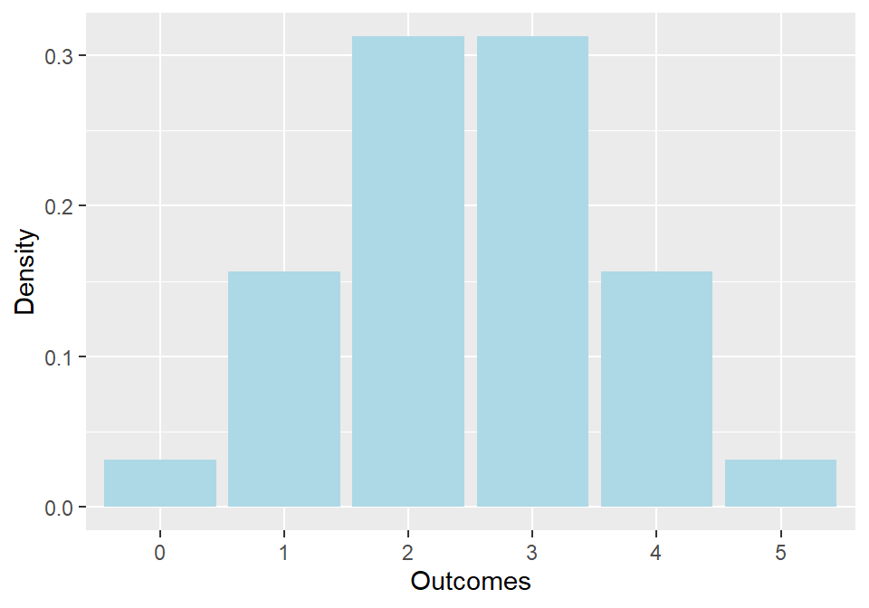
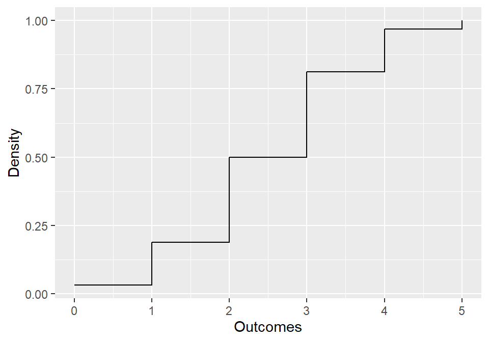
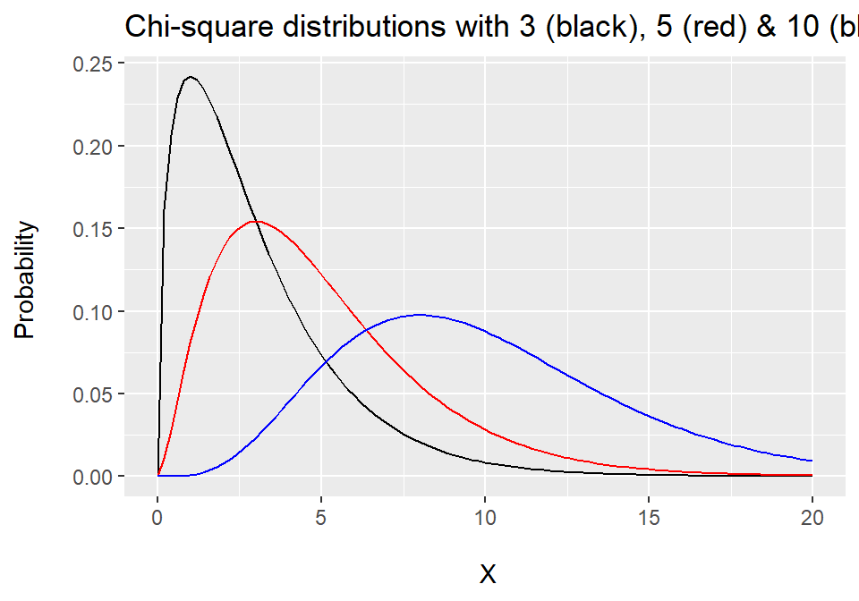
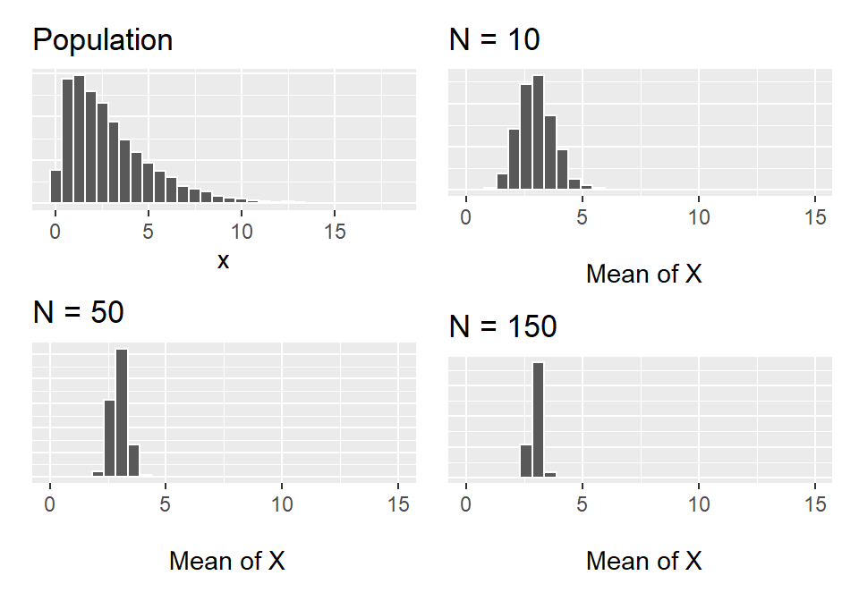

Lecture 15: Statistical Distributions
Data Analysis for Psychology in R 1
Tom Booth
Today
- Discuss why we do not always need to bootstrap
- Role of statistical distributions in inference
- Major focus on normal distribution
Learning objectives
- Develop understanding of probability distributions.
- Increase awareness of the role of central limit theorem for hypothesis testing.
Inference
- We have used bootstraps to get across the idea of a sampling distribution.
- In inference, we want to know what the variance in the sampling distribution is, given some specified value of the unknown population parameter of interest (\(H_{0}\)).
- From this, we can say something about how probable our sample estimate is given \(H_{0}\).
- How….
Probability distributions
- Sampling distributions are probability distributions.
- We have seen lots of probability distributions so far in dapR.
- A probability distribution maps the values of a random variable to the probability of it occurring.
- We have noted that for:
- For discrete distributions we maps to a specific value of outcome.
- For continuous distributions we map to areas under the curve.
- The mapping occurs via a probability mass (or density) function
Binomial
- We have talked a lot about examples that are formally called Bernoulli experiments/process
- Properties:
- There are two outcomes (success and failure)
- We have a probability of success (\(p\))
- We are interested in the number of successes (\(k\)) given a fixed number of trials (\(n\))
- Think how heads in a sequence of coin tosses.
- Or ESP from lab.
Binomial PMF
\[
f(k,n,p) = Pr(X = k) = \binom{n}{k}p^{k}q^{n-k}
\]
- \(k\) = number of success
- \(n\) = total trials,
- \(p\) = probability success
- \(q\) = \(1-p\) or probability of failure
An example
- Experiment:
- Guess the hand a coin is in.
- 5 trials (n=5)
- \(p(correct) = 0.5\)
- Thus \(q = 1 - 0.5 = 0.5\)
- We could get 0-5 of these trials correct.
- So we have 6 possible values of our outcome to calculate the probability for.
- (see additional slides for working)
Binomial probability distribution

Cumulative probability
- Another way we can think about representing probability of outcomes is cumulatively.
- Cumulative probability distributions provide a way to easily see the total probability of all values before r after a given point.
Cumulative probability

- The cumulative probability function in the case of binomial simply sums the probabilities of the individual outcomes.
Normal distribution
- This term normal distribution has come up a lot.
- A normal distribution is a continuous distribution
- It is uni-modal (one peak) and symmetrical
- Also referred to as the Gaussian distribution
Normal: PDF
\[
f(x|\mu, \sigma) = \frac{1}{\sigma\sqrt{2\pi}}e^{-\frac{x-\mu^2}{2\sigma^2}}
\]
- A little bit scary!
- But the basic points are:
- It is a function of data (\(x\))
- And two parameters \(\mu\) and \(\sigma\) (mean and SD)
Normal family
- There is not one single normal distribution.
- We have a family of different distributions defined by the mean (\(\mu\)) and standard deviation (\(\sigma\))
Properties of normal
- Nice properties of any normal distribution:
- \(\approx\frac{1}{2}\) of area falls under \(\frac{2}{3}\) of a SD on either side of mean
- \(\approx\frac{2}{3}\) of area falls under 1 SD on either side of mean
- \(\approx\) 95% of area falls under 2 SD on either side of mean
- Exactly 95% falls under +/- 1.96 SD
- \(\approx 99.75%\) of area falls under 3 SD on either side of mean.
Z-scores
\[
Z = \frac{x - \mu}{\sigma}
\]
- It is quite typical to present a normal distribution in terms of z-scores.
- z-scores standardize values of x.
- The numerator: converts x to deviations from the mean.
- The denominator: scales these values based on the observed spread in the data (SD)
Standard normal
- The distribution of z-scores is call the standard normal distribution.
- It has:
Central limit theorem
- We have briefly noted CLT before. To refresh;
- The Central Limit Theorem states that the sampling distribution of the sample means from any underlying distribution with a defined mean and variance, approaches a normal distribution as the sample size gets larger.
- The resultant sampling distribution has:
- \(\bar{x} = \mu\)
- \(\sigma_{\bar{x}}^{2} = \frac{\sigma^2}{N}\)
- \(\sigma_{\bar{x}} = \frac{\sigma}{\sqrt{N}}\)
Chi-square distribution
- Continuous probability distribution
- Non-symmetric
- Parameters = degrees of freedom
\[
Mean = df
\]
\[
Variance = 2*df
\]
Chi-square distribution

Chi-square distribution

t-distribution
- Continuous probability distribution.
- Symmetric and uni-modal (similar to the normal distribution).
- “Heavier tails” = greater chance of observing a value further from the mean
- Parameters:
\[
Mean = 0, \nu>1
\]
\[
Variance = \frac{\nu}{\nu - 2}, \nu > 2
\]
Sampling distributions
- \(\chi^2\) distribution, t-distribution and binomial distribution are all commonly used for statistical inference.
- What the CLT demonstrations above show, is that we can often use the normal distribution as an approximation
Standard error
- One of the big points we have emphasized is sampling variability is characterized by the SD of the sampling distribution.
- But how do we obtain this from a single sample?
- We have already seen the answer thanks to CLT.
- The resultant sampling distribution has:
- \(\bar{x} = \mu\)
- \(\sigma_{\bar{x}}^{2} = \frac{\sigma^2}{N}\)
- \(\sigma_{\bar{x}} = \frac{\sigma}{\sqrt{N}}\) = standard error
So why tell us about bootstraps?
- Intuitive understanding.
- Sometimes statistical tools “break”
- We do not know the sampling distribution for all statistics
- Sometimes statistical model assumptions are not met.
- If either happen, bootstraps can be a solution.
Summary
- We can make inferences (NHST system) using statistical distributions.
- Different statistics have different sampling distributions.
- In many cases, the normal is a good approximation due to CLT.
Tasks for this week…
- Finish tasks from last week.
- Quiz 15: Hypothesis Testing
- Today at 17:00.
- Close Monday 3rd at 17:00
- Lab Test 2
Binomial Worked Example
- Experiment:
- Guess the hand a coin is in.
- 5 trials (n=5)
- \(p(correct) = 0.5\)
- Thus \(q = 1 - 0.5 = 0.5\)
Possible outcomes
- We have 5 trials.
- So our possible outcomes are:
\[
X = [0,1,2,3,4,5]
\]
Calculation for X = 3
\[
Pr(X = 3) = \binom{n}{k}p^{k}q^{n-k}
\]
Step 1
\[
\binom{5}{3}
\]
- Is read as 5 choose 3.
- It is the number of possible ways we could get 3 successes
- That is, we might get trials 1, 2, and 3 correct.
- Or trials 2, 3, and 5 etc.
- We work out this total number using factorials
Step 1: Factorials
\[
\binom{n}{k} = \frac{n!}{k!(n-k)!}
\]
- Where \(n!\) for \(n=5\) is
\[
n! = 5*4*3*2*1 = 120
\]
Step 1: Our calculation
\[
\binom{5}{3} = \frac{5!}{3!(5-3)!} = \frac{5!}{3!2!} = \frac{120}{6*2} = 10
\]
- There are 10 ways to get three trials correct.
Step 1: Brute Force
| 1 |
Y |
Y |
Y |
N |
N |
| 2 |
Y |
Y |
N |
Y |
N |
| 3 |
Y |
Y |
N |
N |
Y |
| 4 |
Y |
N |
Y |
Y |
N |
| 5 |
Y |
N |
Y |
N |
Y |
| 6 |
Y |
N |
N |
Y |
Y |
| 7 |
N |
Y |
Y |
Y |
N |
| 8 |
N |
Y |
Y |
N |
Y |
| 9 |
N |
Y |
N |
Y |
Y |
| 10 |
N |
N |
Y |
Y |
Y |
step 1
\[
Pr(X = 3) = 10*p^{k}q^{n-k}
\]
Step 2
\[
p^{k}q^{n-k}
\]
- We need to add in our probabilities of success, trial number and number of successes.
\[
p^{k}q^{n-k} = 0.5^3(1-0.5)^{5-3} = 0.5^30.5^2
\]
Step 2
\[
0.5^3 = 0.5*0.5*0.5 = 0.125
\]
And the second…
\[
0.5^2 = 0.5*0.5 = 0.25
\]
Step 2
\[
p^{k}q^{n-k} = 0.5^30.5^2 = 0.125*0.25 = 0.03125
\]
- Insert the values and complete.
Finish it off
\[
Pr(X = 3) = 10*0.03125 = 0.3125
\]
- So the probability of three successes in this experiment is 0.3125.
- You can follow these steps for all the other possible outcome values, and confirm the values in the plot from lecture.